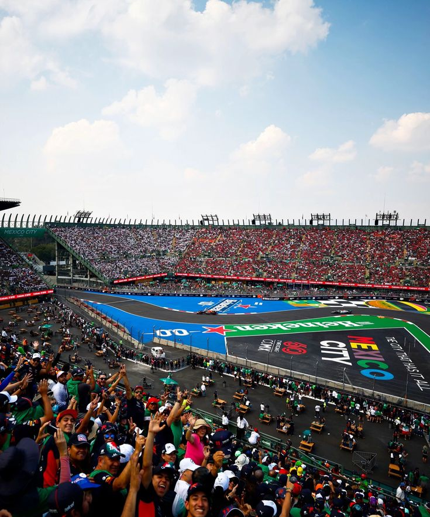

Autódromo Hermanos Rodríguez

Technical Details
Location: Mexico City, Mexico
Length: 4.304 km
Laps: 71
First GP: 1963
Curiosities
The Mexico City circuit is known for its high altitude, which significantly affects car performance and engine efficiency. Originally opened in 1962 and modernized for F1’s return in 2015, it is named after racing brothers Ricardo and Pedro Rodríguez. The stadium section creates one of the most vibrant atmospheres in motorsport. It is also famous for passionate local fans and festive race weekends.